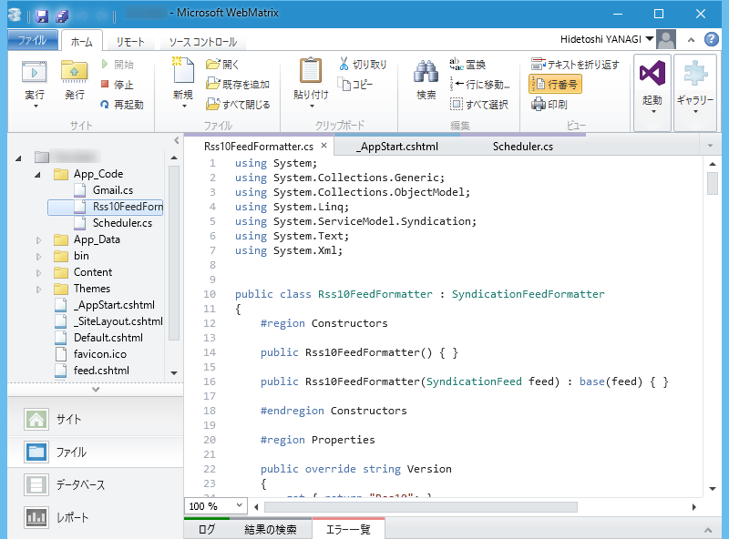

WebMatrix：フィードを読み込むときに System.Xml.XmlException が発生する
公開日：
ASP.NET Web Pages 製の BOT が、ある日を境に突然、System.Xml.XmlException エラーを吐くようになった。
The element with name 'RDF' and namespace 'http://www.w3.org/1999/02/22-rdf-syntax-ns#' is not an allowed feed format.
某サイトのリニューアルで、RSS 2.0 が RSS 1.0 になったせいでフィードが読めなくなったらしい／(^o^)＼
Classes That Model Syndication Feeds and Items
- SyndicationFeed - represents a syndication feed. Has properties like Title, Description, Links, and Items. The Items property represents the collection of content items expressed in the feed.
- SyndicationItem - represents a specific syndication feed item and includes properties like Title, Summary, PublishDate, Authors, and so on.
Classes That Transform Syndication Feeds To/From XML
Syndicating and Consuming RSS 1.0 (RDF) Feeds in ASP.NET 3.5 - 4GuysFromRolla.com
- Rss20FeedFormatter - can take a SyndicationFeed object and turn it into XML that conforms to the RSS 2.0 specification. Also, can be used to consume a properly-formatted RSS 2.0 feed, turning the XML into a SyndicationFeed object with its properties set based on the data in the consumed XML.
- Atom10FeedFormatter - same as the Rss20FeedFormatter, but uses the Atom 1.0 standard.
Rss10FeedFormatter は標準で用意されていないみたいなので、自分で実装する必要がある。
幸い、コードが GitHub に転がっていたので拝借（見覚えのあるアイコンの人だなぁ……）。おおきにさんきゅーやで！

これを以下のように呼び出してやれば、解決。めでたしめでたし。
try { feed = SyndicationFeed.Load(reader); } catch { // エラーがでたら RSS 1.0 ってことにしておく var formatter = new Rss10FeedFormatter(); formatter.ReadFrom(reader); feed = formatter.Feed; }